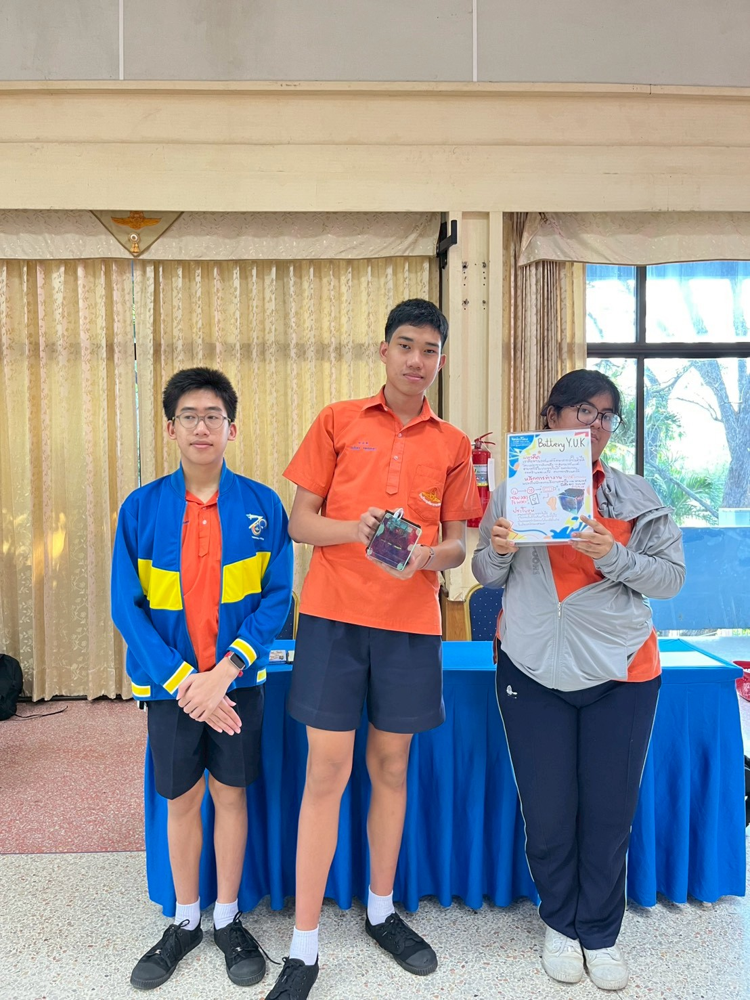

หน้าแรก
เกี่ยวกับ
เป้าหมาย
แนวคิด
ขั้นตอน
กระบวนการ
ประเมินผล
บทเรียน
Gallery
อ้างอิง
ทีมงาน
Updates
ยินดีต้อนรับสู่เว็บโครงงาน STEM02_3
เว็บไซต์นี้จัดทำขึ้นเพื่อแสดงโครงงาน STEM02_3 ของโรงเรียนฤทธิยาวรรณาลัย
ชื่อผลงาน/โครงการ (Project Name)
"ระบบแปลงพลังงานกลเป็นไฟฟ้าจาก Dynamo เพื่อชาร์จ Power Bank"
"Hand-Crank Dynamo to Power Bank Charging System"
ประเภทผลงานนวัตกรรม (Innovation Category)
โครงงานนี้จัดอยู่ในประเภท:
✓ นวัตกรรมด้านผลิตภัณฑ์ (Product Innovation Project) นวัตกรรมด้านกระบวนการ (Process Innovation Project)
นวัตกรรมด้านการบริการ (Service Innovation Project)
คำสำคัญ (Keywords)
ไดนาโม (Dynamo)
Power Bank
การแปลงพลังงาน
พลังงานหมุนเวียน
วงจรควบคุมแรงดัน
STEM
พลังงานสะอาด
การชาร์จฉุกเฉิน
เกี่ยวกับโครงงาน - สรุปผลงานโดยย่อ (Project Summary)
ความเป็นมาและความใหม่ของนวัตกรรม
โครงงานนี้เป็นการพัฒนาระบบแปลงพลังงานกลเป็นไฟฟ้าจาก Dynamo เพื่อชาร์จ Power Bank โดยมีวัตถุประสงค์เพื่อสร้างสรรค์แหล่งพลังงานสะอาด เชื่อถือได้ และสามารถพกพาได้จากการหมุนด้วยมือ ซึ่งสามารถนำไปใช้ชาร์จอุปกรณ์อิเล็กทรอนิกส์ได้โดยไม่ต้องพึ่งพาไฟบ้าน เหมาะสำหรับสถานการณ์ฉุกเฉิน กิจกรรมกลางแจ้ง หรือพื้นที่ห่างไกลที่ไม่มีไฟฟ้า
ความใหม่: นวัตกรรมนี้เป็นการปรับปรุงและบูรณาการ เทคโนโลยีที่มีอยู่ (Dynamo, Voltage Regulator, Power Bank) มาออกแบบเป็นระบบเดียวที่สมบูรณ์ เน้นความเสถียรและความปลอดภัยในการชาร์จ โดยใช้หลักการทางฟิสิกส์ (การแปลงพลังงาน) และอิเล็กทรอนิกส์ (การควบคุมแรงดันและกระแส)
วิธีการทำงานของระบบ
ขั้นตอนการทำงาน:
การแปลงพลังงาน: Dynamo แปลงพลังงานกล (จากการหมุนด้วยมือ) เป็นพลังงานไฟฟ้ากระแสสลับ (AC) ผ่านการหมุนของแม่เหล็กและขดลวดการเรียงกระแส (Rectification): วงจร Rectifier (ใช้ไดโอด) แปลงกระแสสลับ (AC) เป็นกระแสตรง (DC)การควบคุมแรงดัน (Regulation): วงจร Voltage Regulator (เช่น LM7805) ปรับแรงดันให้คงที่ 5V และควบคุมกระแสให้อยู่ในช่วงที่ปลอดภัย (ประมาณ 1A)การชาร์จ Power Bank: กระแสไฟฟ้าที่ผ่านการควบคุมแล้วจะถูกส่งไปชาร์จ Power Bank ผ่านพอร์ต USB
ผลลัพธ์และผลกระทบ
ด้านการปรับปรุง (เพิ่มประสิทธิภาพ/ลดต้นทุน):
ลดการพึ่งพาไฟบ้าน: สามารถชาร์จอุปกรณ์ได้โดยไม่ต้องใช้ไฟฟ้า ประหยัดค่าไฟฟ้าประมาณ 0.5 บาท/ครั้ง ต้นทุนการผลิต: ต้นทุนการสร้างต้นแบบประมาณ 800-1,200 บาท (รวม Dynamo, วงจรอิเล็กทรอนิกส์, โครงสร้าง)พลังงานสะอาด: ไม่ก่อให้เกิดมลพิษ ใช้พลังงานกลจากมนุษย์ 100%
ด้านบุกเบิก (ใหม่/เปลี่ยนทั้งระบบ):
การเรียนรู้: เป็นเครื่องมือสอนหลักการแปลงพลังงานและวงจรอิเล็กทรอนิกส์แบบ hands-onการประยุกต์ใช้: สามารถพัฒนาต่อเป็นระบบผลิไฟฟ้าฉุกเฉิน, ชุด Survival Kit, หรืออุปกรณ์ออกกำลังกายควบคุมการชาร์จมูลค่าทางการศึกษา: สร้างแรงบันดาลใจให้นักเรียนเข้าใจหลักการ STEM และพลังงานทดแทน
มูลค่าทางเศรษฐกิจและสังคม:
ต้นทุนต่อหน่วย: ประมาณ 800-1,200 บาท (หากผลิตเชิงพาณิชย์สามารถลดต้นทุนลงได้)ความยั่งยืน: ช่วยลดการใช้พลังงานจากฟอสซิล ส่งเสริมการใช้พลังงานสะอาดความปลอดภัย: ระบบควบคุมแรงดันและกระแสป้องกันไม่ให้ Power Bank เสียหายความพึงพอใจ: ผู้ใช้สามารถชาร์จอุปกรณ์ได้ด้วยตัวเอง สร้างความมั่นใจในสถานการณ์ฉุกเฉิน
เป้าหมาย / Objective
สร้างต้นแบบระบบแปลงไฟฟ้าจาก Dynamo ให้สามารถชาร์จ Power Bank ได้จริงในภาคสนาม
ลดการพึ่งพาไฟบ้าน ด้วยการใช้พลังงานกลจากการหมุน/ปั่นเพื่อผลิตไฟฟ้า
ออกแบบวงจรควบคุมแรงดัน (Control Circuit) ให้จ่ายไฟเสถียร ปลอดภัยต่อแบตเตอรี่
ทดสอบประสิทธิภาพการชาร์จ (แรงดัน/กระแส/เวลา) และบันทึกผลเพื่อปรับปรุงรุ่นถัดไป
เผยแพร่ความรู้การประดิษฐ์ให้เพื่อนๆ สามารถทำซ้ำและต่อยอดได้
แนวคิดการพัฒนานวัตกรรม
ใช้การแปลงพลังงานกลจาก Dynamo เป็นไฟฟ้ากระแสตรง แล้วผ่านวงจรควบคุมเพื่อชาร์จแบตเตอรี่
ออกแบบลำดับโมดูล: แหล่งพลังงานกล (ปั่น/หมุน) → Dynamo → Rectifier/Regulator → Power Bank
เน้นความปลอดภัยของแบตเตอรี่ ด้วยการควบคุมแรงดันและกระแสให้อยู่ในช่วงที่ปลอดภัย
ทดสอบและวัดผลด้านแรงดัน กระแส เวลา และอุณหภูมิ เพื่อปรับปรุงประสิทธิภาพ
วางแนวทางต่อยอด เช่น เพิ่มตัวเก็บประจุ หรือตัวปรับรอบ เพื่อเพิ่มเสถียรภาพและประสิทธิภาพ
ขั้นตอนการดำเนินงานตามหลัก STEM
ศึกษา - ค้นคว้าและรวบรวมข้อมูลที่เกี่ยวข้องวางแผน - กำหนดเป้าหมายและออกแบบการดำเนินงานทำ - สร้างโครงงานตามแบบที่วางแผนไว้สรุป - ประเมินผลและสรุปการเรียนรู้
กิจกรรม/กระบวนการพัฒนานวัตกรรม
รูปแบบของกิจกรรม/กระบวนการ
โครงงานนี้ใช้กระบวนการพัฒนาแบบ Design Thinking และ STEM Learning Cycle โดยเน้นการทดลองและปรับปรุงแบบวนซ้ำ (Iterative Development)
ขั้นตอนการจัดกิจกรรม/การพัฒนา/ใช้นวัตกรรม
ศึกษาและวิจัย (Research Phase)
ศึกษาหลักการทำงานของ Dynamo และการแปลงพลังงานกล-ไฟฟ้า
วิเคราะห์ความต้องการแรงดัน/กระแสของ Power Bank (โดยทั่วไป 5V, 1-2A)
ค้นคว้าวงจรควบคุมแรงดัน (Voltage Regulator) และวงจรเรียงกระแส (Rectifier Circuit)
ออกแบบต้นแบบ (Design Phase)
วางแผนโครงสร้างระบบ: Dynamo → Rectifier → Voltage Regulator → Power Bank
เลือกอุปกรณ์อิเล็กทรอนิกส์ที่เหมาะสม (ไดโอด, ตัวเก็บประจุ, IC Regulator)
ออกแบบและสร้างโมเดล 3D สำหรับโครงสร้างรองรับ
สร้างและประกอบ (Building Phase)
ประกอบวงจรเรียงกระแสและวงจรควบคุมแรงดันบน Breadboard/PCB
เชื่อมต่อ Dynamo เข้ากับวงจรควบคุม
ติดตั้งระบบเข้ากับโครงสร้างที่พิมพ์ 3D
ทดสอบและปรับปรุง (Testing & Iteration Phase)
ทดสอบการทำงานด้วยการหมุน/ปั่น Dynamo ด้วยมือหรือกลไก
วัดแรงดันและกระแสขาออกด้วย Multimeter
ทดสอบการชาร์จ Power Bank จริงและบันทึกเวลา
ปรับปรุงวงจรและเพิ่มความเสถียร (เช่น เพิ่มตัวเก็บประจุ หรือปรับ Gear ratio)
ประเมินผลและสรุป (Evaluation Phase)
วิเคราะห์ประสิทธิภาพและความคุ้มค่าของระบบ
สรุปปัญหาและข้อเรียนรู้
จัดทำเอกสารและนำเสนอผลงาน
ระยะเวลาดำเนินการ
ขั้นตอนที่ 1 (ศึกษาวิจัย): 2 สัปดาห์
ขั้นตอนที่ 2 (ออกแบบ): 1 สัปดาห์
ขั้นตอนที่ 3 (สร้างและประกอบ): 2 สัปดาห์
ขั้นตอนที่ 4 (ทดสอบและปรับปรุง): 3 สัปดาห์
ขั้นตอนที่ 5 (ประเมินผลและสรุป): 1 สัปดาห์
รวมระยะเวลาทั้งหมด: ประมาณ 9 สัปดาห์
การประเมินผลการปรับปรุง/เปลี่ยนแปลง/สิ่งประดิษฐ์
วิธีการประเมินผล
การประเมินผลแบ่งออกเป็น 2 ประเภท:
1. การประเมินเชิงปริมาณ (Quantitative Evaluation)
แรงดันไฟฟ้าที่ได้: วัดแรงดันขาออกจาก Dynamo ก่อนและหลังผ่านวงจรควบคุม (เป้าหมาย: 5V ± 0.2V)กระแสไฟฟ้า: วัดกระแสที่จ่ายให้ Power Bank (เป้าหมาย: 0.5-2A)เวลาในการชาร์จ: บันทึกเวลาที่ใช้ในการชาร์จ Power Bank จาก 0% ถึง 100%ประสิทธิภาพการแปลงพลังงาน: คำนวณอัตราส่วนพลังงานนำเข้า/พลังงานที่ได้ความเร็วรอบ Dynamo: วัด RPM (Revolutions Per Minute) ที่จำเป็นในการผลิตไฟฟ้า
2. การประเมินเชิงคุณภาพ (Qualitative Evaluation)
ความเสถียรของระบบ: ประเมินความสม่ำเสมอของแรงดันและกระแสขณะใช้งานความปลอดภัย: ตรวจสอบอุณหภูมิของอุปกรณ์ไม่ควรร้อนเกิน 60°Cความสะดวกในการใช้งาน: ประเมินความง่ายในการหมุน/ปั่น Dynamoความทนทานของอุปกรณ์: ทดสอบการใช้งานต่อเนื่อง
ผลของการเปลี่ยนแปลงที่เกิดขึ้น
(ส่วนนี้จะอัปเดตเมื่อมีข้อมูลจากการทดสอบจริง)
กราฟแสดงแรงดันไฟฟ้าที่วัดได้ตามเวลา (Run Chart)
กราฟแสดงกระแสไฟฟ้าที่วัดได้ตามเวลา
ตารางเปรียบเทียบผลลัพธ์ก่อนและหลังการปรับปรุงวงจร
การประมาณการผลลัพธ์ในเชิงเศรษฐกิจ
ต้นทุนการผลิต: ประมาณ 800-1,200 บาท (รวม Dynamo, วงจรอิเล็กทรอนิกส์, วัสดุโครงสร้าง)ประโยชน์ที่ได้รับ: สามารถชาร์จ Power Bank ได้โดยไม่ต้องใช้ไฟบ้าน (ประหยัดค่าไฟประมาณ 0.5 บาท/ชาร์จ)การประยุกต์ใช้: เหมาะสำหรับสถานการณ์ฉุกเฉิน, กิจกรรมกลางแจ้ง, หรือพื้นที่ที่ไม่มีไฟฟ้ามูลค่าเพิ่มทางการศึกษา: เป็นเครื่องมือสอนหลักการแปลงพลังงานและวงจรอิเล็กทรอนิกส์
หมายเหตุ: ผลการทดสอบจริงและกราฟจะอัปเดตเมื่อดำเนินการทดลองเสร็จสิ้น
สรุปบทเรียนที่ได้รับ (Lesson Learned)
ปัญหาและความท้าทายที่เกิดขึ้น
แรงดันไฟฟ้าไม่เสถียร: เมื่อหมุน Dynamo ด้วยความเร็วไม่สม่ำเสมอ แรงดันที่ได้จะผันแปรตาม
วิธีแก้: เพิ่มตัวเก็บประจุ (Capacitor) ขนาดใหญ่เพื่อเก็บพลังงานและลดความผันแปร และใช้ Voltage Regulator IC (เช่น LM7805) เพื่อรักษาแรงดันคงที่กระแสที่ได้ไม่เพียงพอ: Dynamo ทั่วไปให้กระแสต่ำ ไม่เพียงพอต่อการชาร์จเร็ว
วิธีแก้: ใช้ Dynamo ขนาดใหญ่ขึ้น หรือเพิ่ม Gear Ratio เพื่อเพิ่มความเร็วรอบ หรือใช้การหมุนด้วยมอเตอร์/จักรยานแทนมือความร้อนของวงจร: IC Regulator ร้อนมากเมื่อใช้งานนาน
วิธีแก้: ติดตั้ง Heat Sink (แผ่นระบายความร้อน) และเพิ่มช่องระบายอากาศในโครงสร้างความทนทานของ Dynamo: การหมุนต่อเนื่องทำให้เกิดการสึกหรอ
วิธีแก้: เลือก Dynamo คุณภาพดีที่มี Bearing (ตลับลูกปืน) หรือปรับให้ไม่ต้องใช้แรงมากเกินไป
ข้อแนะนำและสิ่งที่ควรปฏิบัติ
ทดสอบแรงดันก่อนเชื่อมต่อ Power Bank: ใช้ Multimeter วัดแรงดันขาออกก่อนทุกครั้ง เพื่อป้องกันไม่ให้แรงดันสูงเกินไปทำลาย Power Bankใช้ Diode ป้องกันกระแสย้อน: ติดตั้ง Diode เพื่อป้องกันกระแสไหลย้อนกลับเข้า Dynamo ซึ่งอาจทำให้วงจรเสียหายออกแบบให้ใช้งานง่าย: ถ้าต้องหมุนด้วยมือ ควรมี Handle (มือจับ) ที่ถนัดมือ และ Gear Ratio ที่ไม่หนักเกินไปบันทึกข้อมูลอย่างสม่ำเสมอ: จดบันทึกผลการทดสอบทุกครั้ง (แรงดัน, กระแส, เวลา, ความเร็วรอบ) เพื่อนำมาวิเคราะห์และปรับปรุงคำนึงถึงความปลอดภัย: สวมถุงมือเมื่อจับวงจร ตรวจสอบว่าไม่มีสายไฟเปลือย และระวังการลัดวงจร
การประยุกต์ใช้กับส่วนอื่นในองค์กร
โครงงานพลังงาน ทดแทน: สามารถนำหลักการนี้ไปพัฒนาต่อเป็นระบบผลิตไฟฟ้าจากลม, น้ำ, หรือพลังงานกลอื่นๆกิจกรรมการเรียนการสอน: ใช้เป็นชุดทดลองสำหรับสอนเรื่องการแปลงพลังงาน, วงจรไฟฟ้า และอิเล็กทรอนิกส์โครงการชุมชน: พัฒนาเป็นอุปกรณ์สำหรับชุมชนห่างไกลที่ไม่มีไฟฟ้า เช่น ติดตั้งบนจักรยานหรือแหล่งน้ำนวัตกรรมฉุกเฉิน: ประยุกต์ใช้เป็นอุปกรณ์ชาร์จฉุกเฉินในชุด Survival Kit หรือกระเป๋าฉุกเฉินสำหรับภัยพิบัติกิจกรรม Maker/STEM: เผยแพร่ผลงานเป็น Open Source เพื่อให้ผู้อื่นนำไปพัฒนาต่อยอด
อ้างอิง/บรรณานุกรม (References)
รายการเอกสารและแหล่งข้อมูลที่ใช้ในการพัฒนาโครงงาน:
หนังสือและตำรา
สมชาย วงศ์สว่าง. (2565). หลักการพื้นฐานไฟฟ้าและอิเล็กทรอนิกส์ . กรุงเทพฯ: สำนักพิมพ์แห่งจุฬาลงกรณ์มหาวิทยาลัย.
Boylestad, R. L., & Nashelsky, L. (2013). Electronic Devices and Circuit Theory (11th ed.). Pearson.
บทความวิชาการและวารสาร
ทีมวิจัย มหาวิทยาลัยเทคโนโลยีพระจอมเกล้าธนบุรี. (2564). การพัฒนาระบบแปลงพลังงานกลเป็นไฟฟ้าด้วย Dynamo. วารสารวิศวกรรมศาสตร์ KMUTT , 34(2), 45-58.
เว็บไซต์และแหล่งข้อมูลออนไลน์
Arduino Project Hub. (2023). DIY Hand-Crank Phone Charger . สืบค้นเมื่อ 15 มกราคม 2026, จาก https://create.arduino.cc/projecthub
Instructables. (2022). Hand Crank Generator for USB Charging . สืบค้นเมื่อ 18 มกราคม 2026, จาก https://www.instructables.com
ElectronicsHub. (2023). 5V Voltage Regulator Circuit using LM7805 . สืบค้นเมื่อ 20 มกราคม 2026, จาก https://www.electronicshub.org
เอกสารทางเทคนิค (Datasheets)
Texas Instruments. (2016). LM78XX Series Voltage Regulators Datasheet . Retrieved from https://www.ti.com
Fairchild Semiconductor. (2015). 1N4001-1N4007 General Purpose Rectifiers Datasheet . Retrieved from https://www.onsemi.com
วิดีโอและสื่อการเรียนรู้
GreatScott! (2020). How to Build a Hand Crank USB Charger [Video]. YouTube. https://www.youtube.com
ElectroBOOM. (2019). How Dynamos Work - AC DC Conversion [Video]. YouTube. https://www.youtube.com
หมายเหตุ: รายการอ้างอิงข้างต้นเป็นตัวอย่าง ควรอัปเดตด้วยแหล่งข้อมูลจริงที่ใช้ในการพัฒนาโครงงาน และจัดรูปแบบตาม APA Style หรือ IEEE Style ตามที่เหมาะสม
Gallery - ภาพการทำงาน
ภาพประกอบการพัฒนาและทดสอบโครงงาน

นำเสนอโครงงานและทีมงานพัฒนาโครงงาน
💡 คลิกรูปภาพเพื่อดูขนาดใหญ่
×
รายการ Update website!
การเปลี่ยนแปลงครั้งใหญ่:
เพิ่มเมนู "กระบวนการพัฒนา" พร้อมรายละเอียด 5 ขั้นตอนการดำเนินงาน (ศึกษาวิจัย, ออกแบบ, สร้าง, ทดสอบ, ประเมินผล)
เพิ่มเมนู "การประเมินผล/ผลลัพธ์" อธิบายวิธีการประเมินเชิงปริมาณและคุณภาพ พร้อมมูลค่าทางเศรษฐกิจ
เพิ่มเมนู "บทเรียนที่ได้รับ" รวบรวมปัญหา วิธีแก้ และข้อแนะนำที่เป็น action-oriented
เพิ่มเมนู "อ้างอิง" พร้อมรายการหนังสือ บทความ เว็บไซต์ และวิดีโอที่ใช้อ้างอิง
ปรับปรุงหน้าแรกให้มีชื่อโครงการ ประเภทนวัตกรรม และคำสำคัญแบบครบถ้วน
ปรับปรุงหน้า "เกี่ยวกับโครงงาน" ให้มีสรุปผลงานโดยย่อ อธิบายความใหม่ ผลลัพธ์ และมูลค่าทางเศรษฐกิจ
เปลี่ยนชื่อหน้า "ผลลัพธ์" เป็น "Gallery" สำหรับแสดงรูปภาพและวิดีโอ
สิ่งที่เพิ่มเข้ามา:
เพิ่มปุ่มนำทาง "แนวคิดการพัฒนานวัตกรรม (Conceptual framework)" ในแถบเมนู
สร้างหน้า Conceptual framework อธิบายลำดับโมดูล: แหล่งพลังงานกล → Dynamo → Rectifier/Regulator → Power Bank
ระบุแนวคิดด้านความปลอดภัยและการควบคุมแรงดัน/กระแส สำหรับการชาร์จแบตเตอรี่
ชี้แนะแนวทางทดสอบและต่อยอด เพิ่มเสถียรภาพและประสิทธิภาพ
สิ่งที่เพิ่มเข้ามา:
เพิ่มปุ่มนำทาง "เป้าหมาย / Objective" ในแถบเมนู
สร้างหน้า Objective อธิบายเป้าหมาย โครงสร้างวงจร และการทดสอบ
รวบรวมจุดมุ่งหมายหลัก: ชาร์จ Power Bank จาก Dynamo, ลดการพึ่งพาไฟบ้าน, ควบคุมแรงดันให้ปลอดภัย
สิ่งที่เปลี่ยนแปลง:
อัปเดตเนื้อหาโครงงานให้ระบุว่าเป็นการแปลงไฟฟ้าจาก Dynamo เป็น Power Bank
เพิ่มรายละเอียดวิธีการทำงานของ Dynamo ในการส่งไฟฟ้าไปให้ Battery
อธิบายการหมุนแม่เหล็กและขดลวด ในการแปลงพลังงาน
เพิ่มบทบาทหน้าที่ในงาน
เพิ่มลิงก์ Instagram สำหรับหัวหน้างาน (nexqan)
เพิ่มลิงก์ Instagram สำหรับสมาชิกที่ 2 (t_eatremiyamura)
เพิ่มลิงก์ Instagram สำหรับสมาชิกที่ 3 (basicbeingbasic)
สิ่งที่เปลี่ยนแปลง:
ย้ายลิงก์เว็บไซต์โรงเรียนไปด้านล่าง (ท้าย section)
ลบไฟล์รูปภาพ IMG_5903.JPG ออก
เปลี่ยนชื่อ "ทีมงาน" เป็นตัวหนา (h3) แทน p
จัดแต่ง Layout ใหม่ให้เป็นระเบียบ
สิ่งที่เปลี่ยนแปลง:
เปลี่ยนชื่อหลัก (Title) ของเว็บไซต์
เพิ่มรายละเอียดเพื่อนร่วมทีมที่ช่วยทำโครงงาน
อัปเดตข้อมูลติดต่อและข้อมูลทีมงาน
สิ่งที่เพิ่มเข้ามา:
เพิ่มระบบรายการ Update ที่สามารถกดเด็งรายละเอียดได้
ออกแบบให้ดูเหมือนเกมธรรมชาติและสวยงาม
เพิ่ม Animation เมื่อกดเด็งรายละเอียด
ใช้วันที่ (date) แทนหมายเลขเวอร์ชัน
สิ่งที่เปลี่ยนแปลง:
ปรับปรุง Animation ของปุ่ม Navigation
เพิ่ม Transition effect เมื่อเปลี่ยน Section
ทำให้ Navigation sticky (ติดด้านบนเสมอ)
สิ่งที่ปรับปรุง:
จัดแต่ง Layout ของหน้า Contact ให้สวยงามมากขึ้น
เพิ่มรูปภาพ Profile ของผู้จัดทำ
เพิ่มข้อมูลรายละเอียดของทีมงาน
สิ่งที่สร้าง:
สร้าง HTML Structure หลัก
ออกแบบ Header ด้วย Animation RGB
เพิ่ม Navigation Menu ทั้ง 6 หน้า
ตั้งค่า CSS พื้นฐานและ Styling